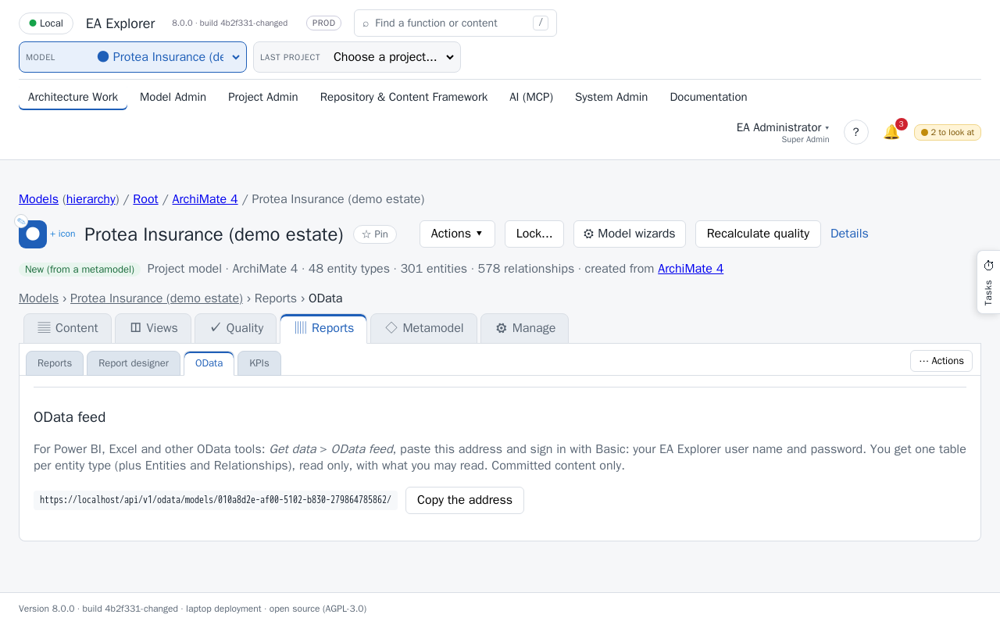

Read a model in Power BI
For: Practising architects, Developers
The model's tables live in Power BI, refreshed when you choose.

#/metamodel/{m}/odataWhy do this
Power BI can read a model's OData feed, so your organisation's own reports and dashboards show the architecture beside other business data. See Data in and out: integration.
The architecture is most useful where decisions are made, which is often outside EA Explorer: in reports, spreadsheets, other systems. Data leaves in the shapes those places need, from the same trusted model.
In TOGAF terms: Communicating the architecture: views and data for stakeholders and other systems. See EA Explorer and the TOGAF Standard.
The goal: The model's tables are live in Power BI.
Steps
- Open the model, Reports › OData, and copy the address.
- In Power BI Desktop: Get data › OData feed; paste the address.
- Sign in with Basic: your user name and password, or your user name and a token as the password.
- Choose the entity types (tables); Load.